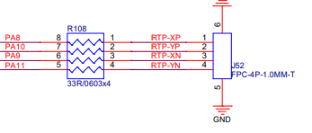

RTP 调试配置
15 Jan 2024
Read time: 2 minute(s)
针对 RTP 电阻触摸屏的配置和调试，只需要根据原理图设置对应的 dts 参数，并将系统自带的 RTP 控制器驱动加载即可完成，不需要额外的触摸屏驱动。
关于 RTP 的详细原理介绍，可参考 RTP 使用指南。
内核配置
-
在 SDK 根目录下，执行下列命令，进入 kernel 的功能配置界面：
make kernel-menuconfig或使用简写命令
make km - 在内核配置界面，按如下选择，打开
Artinchip resistive touchscreen controller support：Linux Device Drivers Input device support [*] Touchscreens <*> Artinchip resistive touchscreen controller support
DTS 参数配置
在 board.dts 文件中添加或修改与 RTP 触摸屏相关的配置，确保硬件连线和所配置参数一致，示例如下：
&rtp {
aic,max-pressure = <800>; //最大压感值，超过此值的坐标事件被忽略，按压力度越小该值越大，即值越大触摸越敏感
aic,x-plate = <235>; //用万用表测量触摸板 X+ 和 X-之间的电阻值获得
pinctrl-names = "default"; //默认
pinctrl-0 = <&rtp_pins>; //RTP 触摸板接线对应的 PIN 脚
status = "okay"; //RTP 驱动使能标志
};在 d211-pinctrl.dtsi 文件中定义 rtp_pins，四个 pin 脚需要分别对应 RTP 屏的 X+ 、Y+ 、X- 、Y-，需要硬件确认无误。
rtp_pins: rtp-0 {
pins {
pinmux = <AIC_PINMUX('A', 8, 2)>,
<AIC_PINMUX('A', 9, 2)>,
<AIC_PINMUX('A', 10, 2)>,
<AIC_PINMUX('A', 11, 2)>;
};
};

注：
务必确保 dts 所配置的参数和引脚与硬件原理图一致。
调试
-
测量硬件通路是否正常，测量电压信号是否正常
-
查看打印信息
打开调试选项，并查看系统启动时是否有异常打印：
Linux Kernel hacking Artinchip Debug [*] RTP driver debug -
查看节点信息
在 RTP 初始化成功后，会在 sysfs 中注册生成一个 status 节点，其中打印了当前的 RTP 配置及状态信息，示例如下：
cat /sys/devices/platform/soc/19252000.rtp/statusIn RTP controller V1.00: Mode 0/2, RTP enale 0, Press detect enable0 Manual mode status 0 Pressure enable1, max 800, x-plate 235, y-plate 0 Point num: 1, Sample period: 0, Fuzz: 0 -
获取坐标信息
如果系统有编译 getevent 工具，触摸屏有触摸时进行坐标的打印：
getevent 获取设备信息
查看设备信息：cat /proc/bus/input/devices例如：
I: Bus=0019Vendor=0000Product=0001Version=0000 N: Name="Power Button" P: Phys=LNXPWRBN/button/input0 S: Sysfs=/devices/LNXSYSTM:00/LNXPWRBN:00/input/input0 U: Uniq= H: Handlers=kbd event0 B: PROP=0 B: EV=3 B: KEY=100000000000000 I: Bus=0011Vendor=0001Product=0001Version=ab41 N: Name="AT Translated Set 2 keyboard" P: Phys=isa0060/serio0/input0 S: Sysfs=/devices/platform/i8042/serio0/input/input1 U: Uniq= H: Handlers=sysrq kbd event1 leds B: PROP=0 B: EV=120013 B: KEY=402000000 3803078f800d001 feffffdfffefffff fffffffffffffffe B: MSC=10 B: LED=7